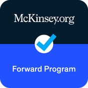
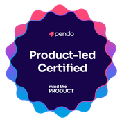
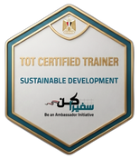

About Me
You've probably had the project that was green for three months and then suddenly wasn't.
Nobody lied. Everyone reported exactly what they saw. That's the problem: most project management is built to describe what's happening, not to find out why. And by the time the why surfaces, the cheap fixes are already gone.
I started in a petrochemical plant.
When a plant trips, everything shuts down at once and dozens of alarms fire in the same second. My job was to work backwards through the data and find the single reading that started it, because the loudest signal is almost never the cause. Years later I was running a youth employment programme and hit the same thing: leadership was planning against a thousand trainees, and the real eligible number was a fraction of that. Different industry, identical failure. The base was wrong, so everything built on top of it was going to be wrong too.
So I don't start with a plan. I start with what's actually true.
Then I turn it into something you can see: a clear specification, real gates instead of status meetings, and five things held in balance at all times: budget, people, quality, timeline, stakeholders. When something breaks, you don't get an escalation from me. You get the cause and two options. And if a project can't return what it costs, you'll hear that from me early, while it's still cheap to act on.
I report to CEOs and COOs.
What I bring them is not a status update. It's the picture that lets them decide, and see what's coming before it arrives. I've run teams of one and teams of sixty, and managed people considerably senior to me as well as people in their first job.
I keep my promises.
Under-promise, overachieve: no overpromising, ever.
I make things clear and simple.
Executives should not have to decode a report.
I own every step from start to finish.
The outcome is mine either way.
What I Have Built
Assets that outlive the engagement.
Every engagement leaves something behind that still works when I am no longer in the room.
A PMO, from scratch, in three months
Built the team to run it too: fresh graduates through highly senior PMs, all under one structure. I wrote the SOPs, the financial governance system, and the workflows connecting operations, marketing, partnerships, project management and finance, so top management could see every pound committed across the company in real time.
A twelve-project portfolio, held to one standard
Employment for white and blue collar workers, training for persons with disabilities, youth, students and underprivileged communities, job fairs, summits and events. Private sector CSR, donors, INGOs, NGOs and ministries across Egypt and Saudi Arabia (including EU and US-backed funding streams) with every monitoring and evaluation tool and every document held to audit standard.
A company's operations, rebuilt inside ClickUp
Trained thirty-plus people across every department to run it without me: from basic usage through to building automated solutions for any business case they meet. I use AI for reporting, dashboards, workflows and operational standardisation.
Portfolio domains: five domains, one delivery standard
E-Learning
Software
Employment
Training
Automation
Why Clients Keep Me
Four reasons the same clients come back.
No domain has ever stopped a delivery
VR game development with zero prior VR exposure in the house. Enterprise .NET and React inside a national social security institution. A 115-cohort training machine. Petrochemical instrumentation and control before all of it. I learn the ground fast, and I deliver at quality on it.
Profit is a deliverable, not a by-product
75%+ gross margins delivered. I protect the client outcome and the company's commercial position in the same decision, and when those two cannot both be protected, I say so before the money is spent, not after.
The systems outlive the engagement
SOPs, financial governance architecture, ClickUp operating models, dashboards, accessibility policy reviews, replication handbooks, operating manuals. Every engagement leaves behind an asset that still works when I am no longer in the room.
A combination that is genuinely rare
An Instrumentation and Control Engineer who has run donor-funded employment programmes for GIZ, ILO, UNICEF and Plan International, and shipped production software in ASP.NET Core, React and MSSQL. On every one of them I have held three clients at once (the internal executives, the beneficiaries, and the client with their own stakeholders behind them) and reconciled all three without losing the programme outcome or the margin.
Three things are non-negotiable on anything I run: quality, profitability, and pace.
Certifications & Badges
Credentials earned, not just claimed.
Google Project Management Certificate
Google · CourseraGenerative AI Overview for Project Managers
PMI
Forward Program
McKinsey.org
Product-led Certified
Pendo · Mind the Product
ToT Certified Trainer: Sustainable Development
Minister of Planning, Economic Development and International CooperationTools & Technology
What runs behind the delivery.
Every tool here I learned on my own: tailored to the business need rather than the other way round, kept current as new tools and updates arrive.
Project & portfolio management
 ClickUp
ClickUp Jira
Jira Asana
Asana Notion
NotionAutomation & integration
 Zapier
Zapier Google Apps Script
Google Apps Script Calendly
CalendlyAI & intelligence
 Claude
Claude Gemini
Gemini Lovable
LovableCollaboration & communication
 Google Workspace
Google Workspace Microsoft 365
Microsoft 365 Mailchimp
Mailchimp Canva
CanvaProduct & behavioural analytics
Delivery stack literacy
 ASP.NET Core
ASP.NET Core React.js
React.js React Native
React Native Django
Django Microsoft SQL Server
Microsoft SQL Server SCORM / LMS standards
SCORM / LMS standardsHow I Deliver
A named standard for every engagement, not instinct.
The framework is chosen for the project. The discipline never is.
- Operating Model
- The Five Lines: budget, people, quality, timeline, stakeholders, trimmed together rather than one at a time.
- Governance Standard
- PMBOK 7: 12 delivery principles, 8 performance domains.
- Competency Framework
- PMI Talent Triangle v2: Ways of Working, Power Skills, Business Acumen.
- Delivery Models
- Agile · Waterfall · Hybrid · Rolling Wave Planning, matched to volatility.
- Risk Management
- Probability × impact scoring with layered mitigation, ISO 31000 aligned: Plan B through Plan Z.
- Problem Solving
- Hypothesis-driven root cause analysis: the method I learned reconstructing plant trips from instrument data, applied to programmes.
- Portfolio Control
- RAG status logic, codified escalation thresholds, tiered oversight by PM maturity.
- Financial Control
- Control accounts, cost line items, time-phased budgets, cost variance, DSO, gross profit.
- Monitoring & Evaluation
- Indicator-level tracking against donor logframes, documentation held to audit standard.
- Quality Management
- Explicit quality rules binding on every delivery party, with two-way feedback per cycle.
The Billowing Sail
A sail doesn't fight the wind.
It takes whatever is blowing and turns it into direction. The curve is capability under load. The line through it is the mast, the structure that stops the shape from collapsing. I've never once had a project with perfect conditions. The skill was never in choosing the wind. It's in the trim.
Start Here
Bring me the messy one.
That's the short version. The work says it better: some of it went well, some of it I stopped on purpose, and both are worth a look. If you're staring at something that feels like it's drifting, I'm happy to just talk it through. No pitch.
Book a Free 15-Min Call